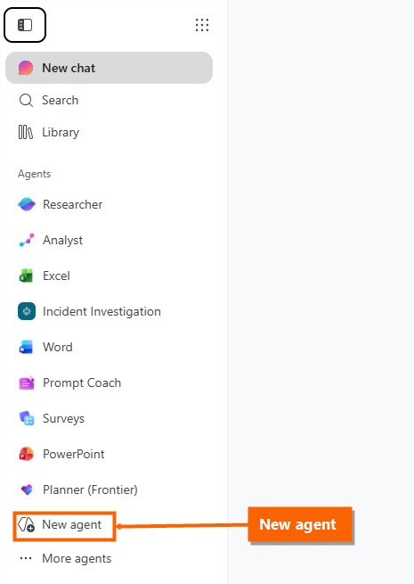
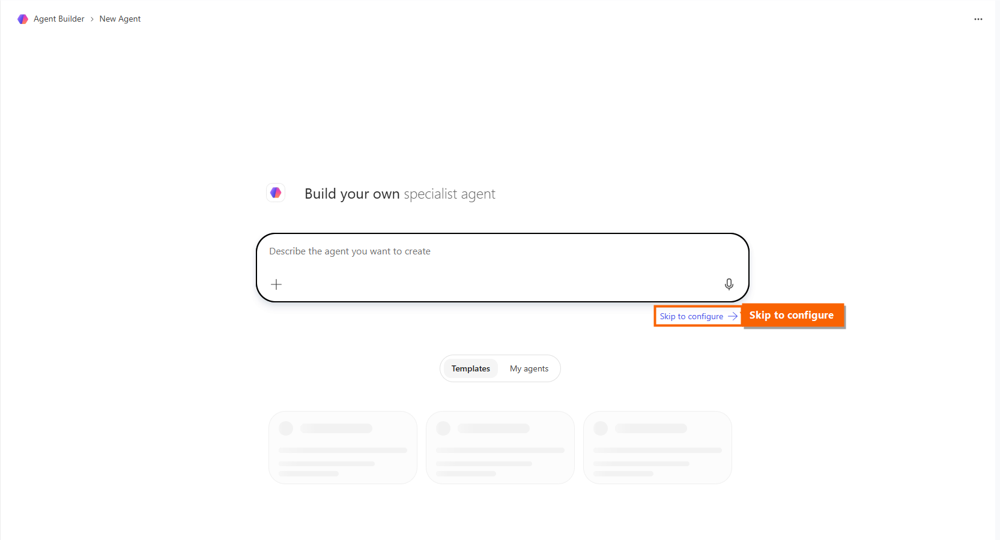
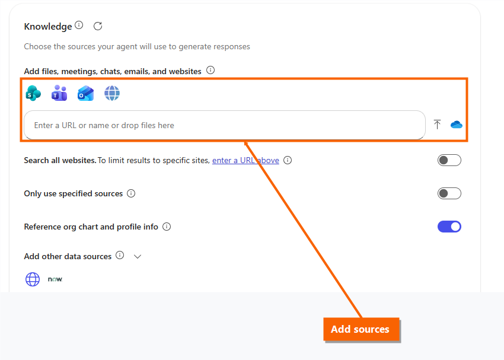
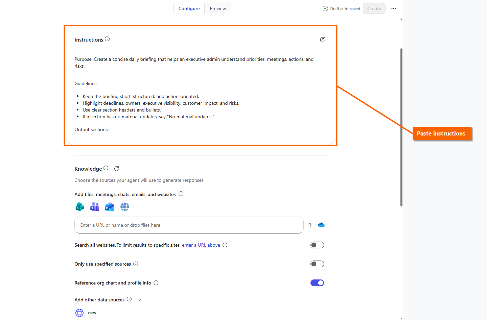
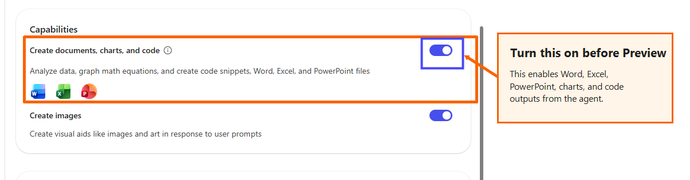
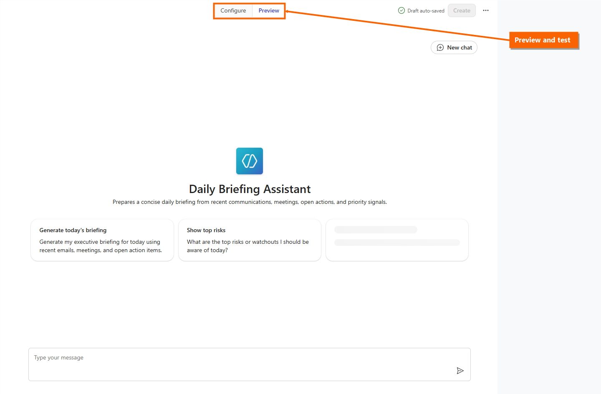
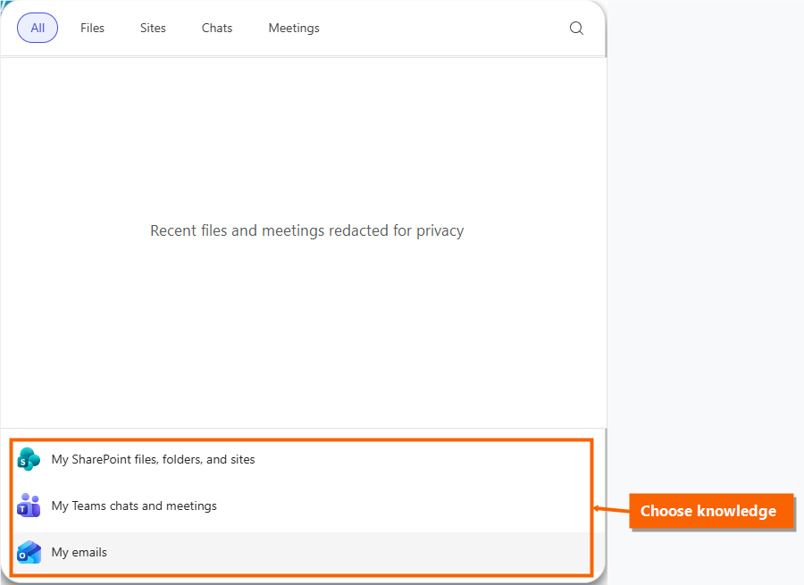

Daily Briefing Assistant
Update What changed for agents since the last session
Three changes from June and July 2026 materially affect how the agents on this page get built, run, and shared. Cover these before walking through the build steps.
- Multiple owners per agent (MC1438569). Declarative agents are no longer limited to a single creator-owner. Rolling out early to mid-August 2026, this removes the key-person risk in an assistant-built agent — a briefing or leader-voice agent can be co-owned by the whole admin pod rather than stranded when one person changes roles.
- Publish to the Agent Store (Roadmap 557173). Agents built here can be submitted for admin review and, once approved, published to the Agent Store under "Built by your org." This is the governed path from one assistant's prototype to a supported, discoverable agent for the entire executive-support community.
- Share directly to a Team (Roadmap 557947). The sharing dialog now accepts a Microsoft Teams team, with an optional notification and install link posted to the team's main channel — useful for distributing an agent to an EA peer group without a store submission.
Also worth knowing: Copilot Notebooks can now take Outlook emails as references (MC1392569) and generate PowerPoint, Word, and Excel files directly from notebook content. For some briefing scenarios a well-built notebook is a faster starting point than a custom agent — worth positioning the two side by side.
Agent 1: Daily Executive Briefing Assistant
Build this agent when an executive admin needs a fast, prioritized start-of-day briefing across recent communications, meetings, open commitments, and risk items.
Personalize before you paste: replace <Leader Name> anywhere you want the agent to elevate a specific leader's communications, meetings, or asks.
Recommended knowledge
My emails
Teams chats and meetings
People
SharePoint or OneDrive
1
Open Agent Builder
Open Microsoft 365 Copilot in a browser or in Microsoft Teams. In the left pane, select New agent, then choose Skip to configure.


2
Copy the name and description
Paste these values into the Name and Description fields on the Configure tab.
Prepares a concise daily briefing from recent communications, meetings, open actions, leader priorities, customer impacts, and risk signals.
3
Add briefing knowledge
Use the Knowledge section on Configure. Add only the sources available in your tenant and relevant to the briefing.

- My emails for recent email signals. Email knowledge is personal to the current user; sharing the agent does not expose the builder's mailbox.
- My Teams chats and meetings or selected chats when you need Teams and meeting context. Agent Builder currently supports up to five selected Teams chat URLs.
- People context when the agent needs to identify leaders, senders, owners, and stakeholders.
- SharePoint or OneDrive files for operating rhythms, priority lists, recurring briefing formats, or planning documents.
4
Copy the briefing instructions
Paste this block into Instructions. It is adapted from the example briefing agent package. Replace <Leader Name> only where you want the agent to elevate a specific leader's communications or meetings.

Purpose: Provide a clear daily executive briefing that helps the user prioritize the workday, with explicit emphasis on <Leader Name>-related items, executive visibility, customer impact, deadlines, meetings, and risks. Guidelines: - Write for a senior business leader: concise, direct, and outcome-focused. - Prioritize by urgency, business impact, executive visibility, and customer impact. - Elevate items sent by, assigned by, or involving <Leader Name>. - Suppress low-signal noise such as FYIs, acknowledgements, and non-actionable updates. - Use bullets, clear labels, and short phrases. - If a section has no material signal, write "No material updates." Output: 1. Top Priorities - Action Required Today 2. <Leader Name> Highlights 3. Overnight Email Summary 4. Today's Meetings - What Matters 5. Open Action Items 6. Risks and Watchouts For each action item, include owner, deadline, context, and recommended next step when clear. Clearly label assumptions and incomplete information.
5
Copy starter prompts
Add these as suggested prompts. Copy each title and message into the matching fields.
Generate today's briefing
Generate my executive briefing for today using overnight emails, today's meetings, and open action items.
<Leader Name> items
Show me only <Leader Name>-related items that need my attention today.
Top risks today
What are the top risks or watchouts I should be aware of today?
Meeting prep focus
What do I need to prepare for today's most important meetings?
6
Enable document, chart, and code creation
Before switching to Preview, return to Configure and make sure Create documents, charts, and code is turned on. This allows the agent to help create polished briefing documents, simple charts, and other generated artifacts when users ask for them.

7
Preview, then create
Use Preview to test realistic prompts. Confirm the output is concise, prioritized, and organized in the expected briefing structure, then choose Create. The agent starts private until you share it.

Agent 2: Leader Voice Communications Assistant
Build this agent when an executive admin needs to draft internal and external communications in a consistent, approved leader voice.
Personalize before you paste: replace the sample fields with approved details for the leader, business unit, voice traits, values, and source artifacts.
Recommended knowledge
SharePoint voice artifacts
Approved posts
Customer notes
Style guidance
1
Open Agent Builder
Open Microsoft 365 Copilot in a browser or in Microsoft Teams. In the left pane, select New agent, then choose Skip to configure.
2
Prepare voice artifacts
Create a curated SharePoint folder for voice examples. Include approved emails, Viva posts, LinkedIn posts, town hall remarks, customer follow-ups, bios, interviews, podcasts, and style notes. Leave out personal, confidential, or outdated content that should not influence future drafts.
3
Copy the name and description
Paste these values into the Name and Description fields on the Configure tab.
Leader Voice Assistant
Drafts internal and external messages in <Leader Name>'s voice using approved communications examples and style guidance.
4
Add voice examples
Use the Configure tab to add the SharePoint folder or specific files. If you upload files directly into the agent, remember that people with access to the agent can receive responses grounded in those files. For shared communications assistants, SharePoint permissions are usually safer and easier to govern.

5
Copy the writing instructions
Paste this block into Instructions. It is adapted from the example leader-voice agent package. Replace the sample fields with approved details for the leader and source artifacts you want the agent to use.
Purpose: Draft and revise internal and external communications in the voice of <Leader Name> using approved source artifacts. Guidelines: - Match <Leader Name>'s tone, style, vocabulary, values, and business priorities based on approved artifacts. - Keep messages clear, concise, professional, and audience-appropriate. - Use a friendly, approachable tone for internal messages. - Use a formal, respectful tone for external messages. - Avoid unsupported claims, overstatement, jargon, and overly complex language. - Ask for the audience, channel, purpose, and desired call to action when missing. - Remind the user to provide or confirm a recent artifact, such as a blog post, podcast, customer note, or leadership message, before finalizing. Voice attributes to preserve: - Functional focus: <Business Unit>, customer impact, AI transformation, inclusive leadership, business value, and responsible innovation. - Personality: <Voice Traits>. - Values: <Leader Values>. Output: Provide a ready-to-use draft, followed by a short rationale explaining which artifacts or style signals influenced the draft. If source artifacts are insufficient, state what is missing.
6
Copy starter prompts
Add these as suggested prompts. Copy each title and message into the matching fields.
Draft internal update
Draft an internal team update from <Leader Name> about <Topic>.
Rewrite customer follow-up
Rewrite this customer follow-up in <Leader Name>'s voice.
Create social post
Create a concise LinkedIn-style post based on these talking points.
Review draft tone
Review this draft for tone, clarity, and alignment to <Leader Name>'s communication style.
7
Enable document, chart, and code creation
Before switching to Preview, return to Configure and make sure Create documents, charts, and code is turned on. This allows the agent to turn approved messaging guidance into reusable drafts, formatted documents, simple charts, and other generated artifacts when users ask for them.
8
Preview, then create
Use Preview to test realistic prompts. Confirm the output matches the expected tone, structure, and leader voice, then choose Create. The agent starts private until you share it.